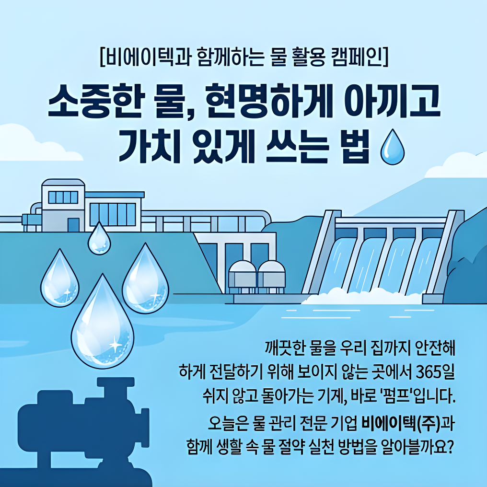
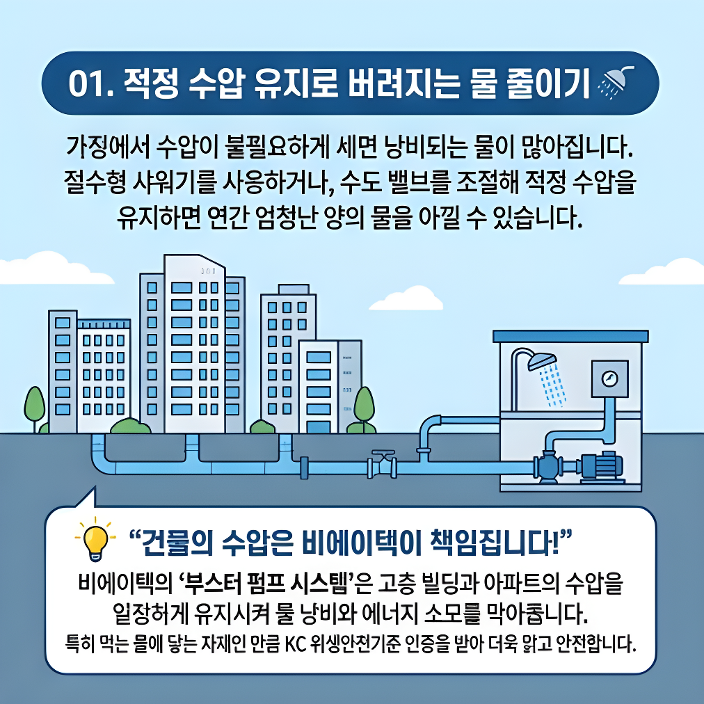
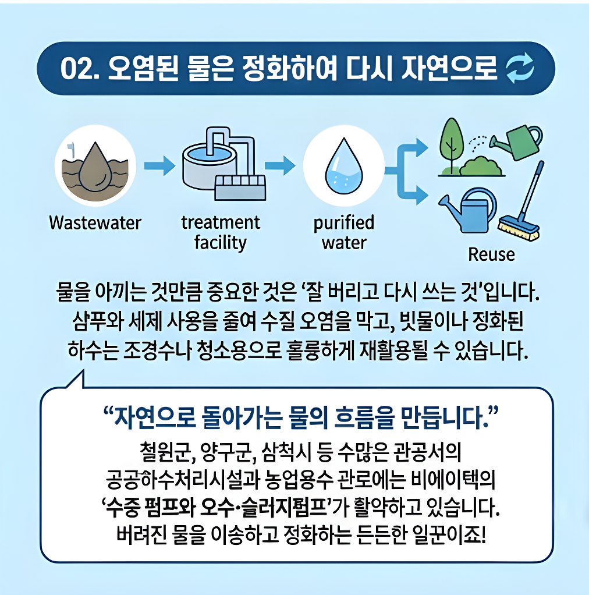

누적 펌프 공급 및 시공
원천 특허 및 품질 인증
지능형 펌프 에너지 절감율
고객 서비스 만족도
비에이텍이 추구하는
3대 혁신 가치
우리는 단순한 기계를 파는 것이 아닌, 생명력을 담은 지속 가능한 물의 가치를 설계합니다.
Eco-Friendly 친환경 미래 수자원
탄소 배출량 감소와 자원 절약을 최우선으로 합니다. 초고효율 전력 설계 모터와 친환경 세라믹 밀폐 구조를 통해 환경 부하를 영(Zero)으로 수렴시킵니다.
- 고효율 에너지 등급 부합
- 윤활액 누출 완전 방지
Hyper-Precision 초정밀 지능화 제어
스마트 센싱 및 IoT 피드백 루프 기술을 결합하여 펌프의 실시간 진동, 압력, 주파수를 측정하고 스스로 운전 성능을 미세하게 자가 조정하는 스마트 솔루션입니다.
- 실시간 상태 분석 인버터
- 센서 기반 고장 예지
Extreme Durability 극한의 내부식 내구력
고밀도 주조 기술과 부식에 원천 차단된 특수 합금을 조합하여 염수, 슬러지, 강한 산성 및 화학 물질이 가득한 환경에서도 파손 없는 장기 내구성을 자랑합니다.
- 크롬/듀플렉스 특수강 사용
- 반영구적 기계적 씰(Seal)

물의 신뢰성을 더하는
비에이텍(주)의 저력
2010년 창립 이래, (주)비에이텍은 다년간 축적해 온 첨단 펌프 유체 역학 엔지니어링 기술을 바탕으로 지역 상수도망부터 특수 산업용 수처리 설비까지 국가 기간 산업 인프라의 핵심 동력을 지탱해 왔습니다. 엄격한 품질 테스트와 끊임없는 원천 기술 개발은 비에이텍이 국내 최고 수준의 신뢰를 획득할 수 있었던 기반입니다.
기업 표준 사양 및 정보
지명원 4p 기준스마트 펌프 압력 & 유량 시뮬레이터
가상의 유체 배관에 가해지는 압력과 펌프의 회전 주파수를 제어하여 실시간 유체 속도 변화와 지능형 전력 효율(Inverter Energy Saving)을 확인해 보세요.
모터 주파수 및 압력 제어
비에이텍 제조 물품 라인업
정교한 성능과 극한의 수명 신뢰도를 보장하는 펌프 라인업입니다.
다단 벌류트 펌프
다층구조 임펠러를 이용해 강력한 고압으로 고층 건물 공급, 발전소 급수, 정수장에 최고 압력을 제공합니다.
볼류트형 / 고압용단단 벌류트 펌프
단일 스테이지 임펠러 구조로 설계되어 농업용 취수 시설, 냉각수 순환, 일반 급배수에서 부드럽고 풍부한 유량을 공급합니다.
표준 범용 / 정밀 순환양흡입 벌류트 펌프
임펠러 양측에서 동시에 물을 흡입하여 균형 잡힌 고용량 유체 이송을 통해 침수 방지 유수지 펌프장 및 대형 취수장에서 안전하게 작동합니다.
초고유량 / 양방향 흡입수중 / 사류 펌프
물속에 완전히 잠겨서 구동되는 모터와 내진성 씰을 결합하여 지하 수조, 상하수 관로 이송, 고점도 하수 유량 제어에 우수합니다.
수중 배치 / 고내마모성비에이텍 브랜드 홍보 카드뉴스
마우스를 카드뉴스 이미지에 올리면 입체적인 발광 효과와 함께 부드럽게 확대됩니다.

첨단 워터테크 개요

핵심 가치 및 핵심 역량

임펠러 가공 기술
성능 시험 및 직접생산
비에이텍 임직원 전용
스마트 생산성 협업 광장
오늘의 알짜 AI 정보: NotebookLM 마스터 가이드
사내 문서, 제품 규격서(PDF), 설계 도면 가이드 등 무수히 많은 지명원 자료를 AI 엔진에 학습시켜 **개인 맞춤형 지식 도서관**을 구축하는 실무 팁입니다.
복수 자료 동시 탑재
지명원 PDF와 CAD 설계 설명서 등 최대 50만 단어 분량의 이종 파일을 업로드하여 원스톱 질의응답이 가능합니다.
인라인 소스 링크 추적
답변에 포함된 숫자가 원본 PDF의 몇 페이지(예: 지명원 15p 직접생산확인서)에서 인용되었는지 명확히 짚어줍니다.
오디오 대화 요약 기능
텍스트 기반 원천 데이터를 토대로 두 명의 AI 가상 호스트가 라디오 팟캐스트 형태로 생동감 있게 핵심을 읊어줍니다.
메모 저장 및 가이드북 생성
수시로 수집된 답변 노트를 취합하여 신규 프로젝트 기획서 초안이나 마케팅 브리프 형태로 즉각 전환해 줍니다.
비에이텍이 흘러온 발자취
신뢰와 기술력 하나로 국가 수자원 인프라를 수놓은 역사의 증명입니다.
(주)강원유체 설립
춘천에서 모터펌프 설계 및 조립 제조 기반의 '(주)강원유체' 법인을 공식 출범하여 수처리 시장에 첫 발을 내딛었습니다.
벤처기업인증 획득
중소기업청으로부터 혁신적 기술 성장 잠재력을 인정받아 공식 '벤처기업' 인증을 최초 획득하였습니다.
비에이텍(주) 상호 변경
글로벌 첨단 기술 도약을 선언하고 상호를 '(주)강원유체'에서 '비에이텍(주)'으로 변경하였으며, 대표이사 조세연 체제를 구축하여 스마트 펌프 개발 역량을 집중 강화하기 시작했습니다.
강원도지사 표창 수상
친환경 고효율 수처리 펌프 보급 공로 및 지역 경제 일자리 창출 활성화 기여에 대한 공로로 강원도지사 공식 표창장을 수여 받았습니다.
공공기관이 선택한
비에이텍 실적
엄격한 기준과 조달 제약을 극복하고 관공서 및 군부대에 대량 납품한 주요 실적 현황입니다.
| 납품 / 발주처 | 주요 납품 내용 (펌프 장비 및 시공 내역) | 지역 |
|---|---|---|
|
홍천군청
|
농업용수 안정 공급용 대용량 수류 취수 펌프, 농어촌공사 솔무치지구 관정 심정 수중 펌프 교체 및 납품 설치 완료 | 강원 홍천 |
|
춘천시청
|
도심 상수도 배관 가압 부스터 펌프 시스템 구축, 근화동 빗물 배수 유수지 특수 고진공 수중 펌프 납품 및 준공 | 강원 춘천 |
|
철원군청
|
철원군 하수관거 관로 수압 제어 수중 블랙스 및 슬러지 대형 오수 분쇄 펌프 설비 시공 시운전 성공 | 강원 철원 |